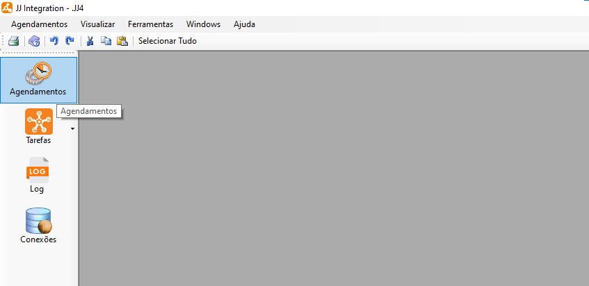
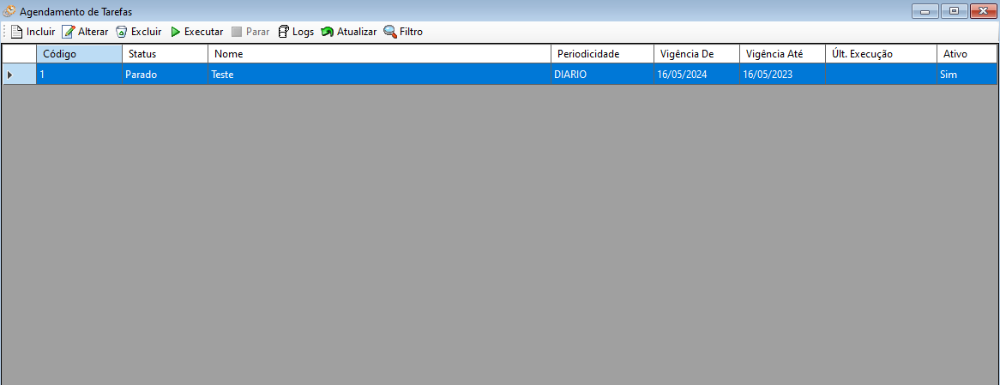
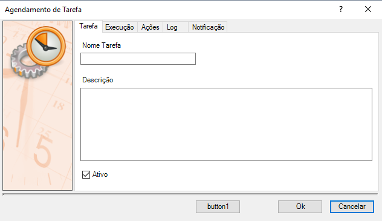
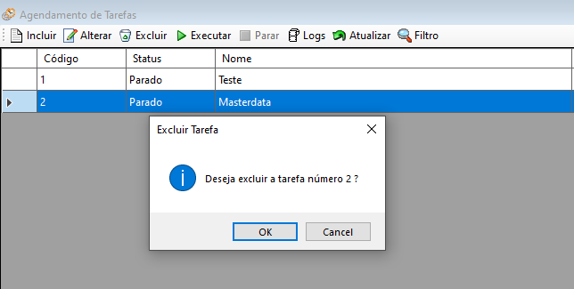

Agendamentos
Agendamentos de Tarefas é uma função onde pode-se incluir, alterar, excluir tarefas cadastrados no sistema, executar ou parar tarefas, visualizar log das tarefas desejadas e atualizar a lista de tarefas.
Esta seção pode ser acessada pelo menu lateral ou menu de utilidades > Agendamentos.
Um agendamento refere-se ao processo de programar a execução de uma tarefa ou processo em um horário específico ou de acordo com um determinado cronograma. Ele permite que você defina quando uma determinada atividade deve ocorrer automaticamente, sem a necessidade de intervenção manual.

 Configurar Agendamentos
Configurar Agendamentos
- Ao selecionar esta opção o sistema ira exibir uma tela onde poderá incluir, alterar, excluir, executar, parar, visualizar log, atualizar e filtrar.

Selecione o botão Incluir  para incluir um novo agendamento. Ao selecionar o sistema irá exibir uma tela para agendamento de tarefas onde deverá preencher informações sobre a tarefa, execução, ações, log e notificação. Após preencher os campos necessários selecione o botão "Ok" para finalizar.
para incluir um novo agendamento. Ao selecionar o sistema irá exibir uma tela para agendamento de tarefas onde deverá preencher informações sobre a tarefa, execução, ações, log e notificação. Após preencher os campos necessários selecione o botão "Ok" para finalizar.
- Na aba Tarefa preencha o nome da tarefa desejada, uma breve descrição e selecione se é uma tarefa ativa ou não.

- Na aba "Execução" selecione a data de vigência, periodicidade, hora e intervalo de atualização.

- Na aba "Tarefas" selecione a ação que deseja que a tarefa realize e as tabelas desejadas.

- Na aba "Log" configure o log de agendamento, podendo utilizar o log genérico da aplicação ou definir uma configuração diferente.
Caso uma configuração diferente seja selecionada, todo o log gerado por esse agendamento respeitará as novas configurações de log.

- Na aba "Notificação" configure quando será feita a notificação, o assunto e o e-mail de destino.

Para alterar dados de um agendamento selecione o agendamento desejado e após selecione o botão Alterar  para alterar um agendamento. Ao selecionar o sistema irá exibir uma tela para agendamento de tarefas onde poderá alterar informações sobre a tarefa, execução, ações, log e notificação. Após alterar os campos necessários selecione o botão "Ok" para finalizar. Também é possível Duplicar agendamento já criado, visando simplificar o processo e produtividade.
para alterar um agendamento. Ao selecionar o sistema irá exibir uma tela para agendamento de tarefas onde poderá alterar informações sobre a tarefa, execução, ações, log e notificação. Após alterar os campos necessários selecione o botão "Ok" para finalizar. Também é possível Duplicar agendamento já criado, visando simplificar o processo e produtividade.
Na aba Tarefa poderá alterar o nome da tarefa desejada, uma breve descrição e selecione se é uma tarefa ativa ou não.

Na aba Execução poderá alterar a data de vigência, periodicidade, hora e intervalo de atualização.
Na aba Tarefas poderá alterar a ação que deseja que a tarefa realize e as tabelas desejadas.
Na aba Log poderá alterar a configuração do log de agendamento, podendo utilizar o log genérico da aplicação ou definir uma configuração diferente.
Na aba Notificação poderá ser alterado, se disponível, quando a notificação será feita, o assunto e o e-mail de envio. Essas informações poderão ser ou não alteradas dependendo da configuração utilizada na criação da tarefa.
Para excluir um agendamento selecione o agendamento desejado e após selecione o botão Excluir
 Após selecionar o sistema irá exibir uma mensagem de confirmação, selecione botão "Ok" para confirmar e excluir.
Após selecionar o sistema irá exibir uma mensagem de confirmação, selecione botão "Ok" para confirmar e excluir.

Para executar um agendamento selecione o agendamento desejado e após selecione o botão Executar "", após selecionar o sistema irá executar a tarefa consumindo os dados inseridos, liberando o botão "Parar" para que seja possível parar a execução da tarefa em qualquer momento.
- Para parar a execução de um agendamento selecione o agendamento desejado e após selecione o botão Parar "", após selecionar o sistema irá parar a execução da tarefa, liberando novamente o botão "Executar" para que seja possível executar novamente a tarefa em qualquer momento.
- Para visualizar o log gerado pela tarefa selecione o botão Log "", após selecionar o sistema irá exibir uma tela com o log gerado para consulta.
Para atualizar a lista de tarefas selecione o botão Atualizar " ", após selecionar o sistema irá atualizar a lista sendo possível dar continuidade nas atividades normalmente.
", após selecionar o sistema irá atualizar a lista sendo possível dar continuidade nas atividades normalmente.
Para filtrar a lista de tarefas selecione o botão Filtro"" para filtrar a tarefa desejada.